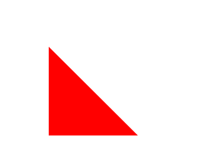
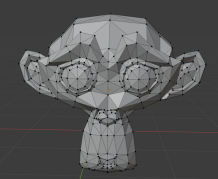

Le HTML5 a été une révolution qui a changé de manière flagrante la manière de créer des sites Internet. Nouveaux blocs, possibilité d'ajouter simplement des sons ou des vidéos, nouveaux éléments de formulaire... Ses apports sont nombreux et leurs bienfaits sont indéniables.
Mais parmi tous ces ajouts, un en particulier permet d'étendre les capacités du navigateur pour ne plus se limiter à l'affichage de sites web : le canevas.
L'élément <canvas> est une balise apparue en HTML5 permettant de réaliser des dessins en JavaScript. Le canevas peut utiliser plusieurs technologies pour créer et afficher le dessin, appelées contextes de rendu (ou rendering contexts). On peut voir un contexte de rendu comme une boîte à outils contenant tout ce dont JavaScript a besoin pour interagir avec le canevas.
Il existe deux contextes principaux qui sont implémentés nativement dans les navigateurs récents : Canvas2D, qui permet de réaliser des dessins en 2D, et WebGL, qui permet de faire de la 3D.
La forme la plus primitive qu'il est possible de faire avec Canvas2D est un rectangle. Sans rentrer dans les détails, voici le code nécessaire à la création d'un rectangle rouge :
See the Pen Untitled by OpenSpirit (@OpenSpirit) on CodePen.
En trois dimensions, la forme de prédilection est un triangle. Voici le code nécessaire à la création d'un triangle rouge :
See the Pen Untitled by OpenSpirit (@OpenSpirit) on CodePen.
Les exemples ci-dessus permettent de mettre en évidence une différence flagrante entre les deux contextes : WebGL est bien plus complexe à manipuler que Canvas2D. L'ajout d'une troisième dimension nécessite de gérer des éléments qui ne sont pas forcément présents en 2D, comme les shaders, les buffers, les sommets...
Cela peut sembler étrange que la forme de base d'un objet 3D soit un triangle, mais, en réalité, un modèle 3D est souvent composé d'un assemblage de triangles (un rectangle peut être composé de deux triangles).
Heureusement, il existe des librairies JavaScript permettant de simplifier l'utilisation de WebGL. Nous allons voir la plus connue et la plus utilisée : three.js.
Three.js est une librairie JavaScript qui permet de manipuler simplement des objets en 3D. Grâce à elle, il est possible de dessiner des formes primitives tridimensionnelles ou d'importer des modèles 3D en quelques lignes de code, et de les afficher en utilisant de nombreuses technologies de rendu, dont WebGL.
Elle dispose également d'outils permettant d'animer ces objets ou de gérer les collisions entre eux. Il est même possible de créer des environnements accessibles depuis un casque de réalité virtuelle.
Pour utiliser la librairie three.js, il va d'abord falloir l'importer dans le projet. Pour cela, il existe deux solutions : l'utilisation d'un CDN et le téléchargement via npm.
See the Pen Untitled by OpenSpirit (@OpenSpirit) on CodePen.
Il est également possible de télécharger three.js grâce à npm, avec la ligne de commande npm install --save three. Il suffira alors d'importer la librairie en utilisant le code suivant :
See the Pen Untitled by OpenSpirit (@OpenSpirit) on CodePen.
Bien que three.js ne soit composé que de JavaScript, il importe ses propres modules. Il faut donc toujours utiliser type="module" dans la balise de script, ce qui provoque des appels HTTP qui peuvent échouer si l'application n'utilise pas de serveur web. Pour utiliser cette librairie, il y a donc deux options :
Pour des raisons d'accessibilité, tous les exemples montrés dans ce cours sont prévus pour fonctionner en local, sans serveur web. Tout le code JavaScript est donc situé entre des balises <script>. Bien entendu, ce n'est pas une bonne pratique : il est recommandé d'exporter son code dans plusieurs fichiers JavaScript. N'hésitez donc pas à mettre en place votre propre serveur web.